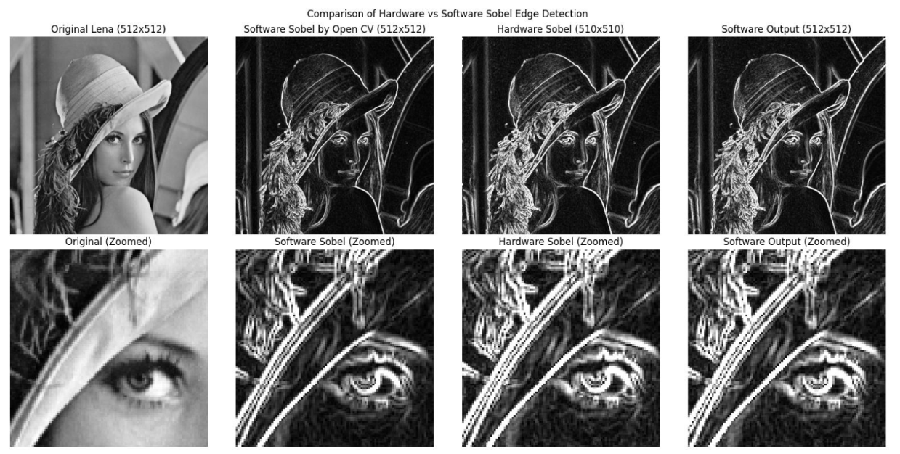

{kind=link}

Sobel Edge Detection SoC Accelerator
Overview
This project presents the design, implementation, and evaluation of a complete System-on-Chip solution for accelerating the Sobel edge detection algorithm on the Xilinx Zynq-7000 AP SoC platform. The design leverages the combined Processing System (PS) and Programmable Logic (PL) architecture to deliver a large performance improvement compared to a software-only implementation.
System Description
The full SoC integrates a software application running on the ARM Cortex-A9 cores with a custom VHDL-based Sobel accelerator in the FPGA fabric. The accelerator is connected through AXI interfaces and uses AXI DMA for efficient image transfers between DDR3 memory and programmable logic.
Software Implementation
A baseline Sobel edge detection version was first implemented in C and executed on the Zynq PS under PetaLinux. This software-only implementation provided the reference performance metrics for later comparison with the hardware-accelerated version.
Hardware Acceleration
A dedicated Sobel edge detector IP core was designed in VHDL for the PL. The accelerator includes AXI4-Lite for controls, AXI4-Stream for pixel data, and AXI DMA compatibility for fast memory transfers. The core is fully pipelined and optimized for high throughput, with a target processing rate up to 200 MSamples/sec at 200 MHz.
Processor Architecture
The accelerator is built from modular VHDL blocks including a pixel window producer, convolution kernel unit, and a Manhattan norm calculator. The pipeline streams 3×3 windows, applies Sobel kernels in hardware, and computes output magnitudes without using an expensive square root.
Key Design Modules
- Input Stream Scaler: prepares pixel data and keeps output identical to the software version by bypassing scaling.
- Window Buffer: generates 3×3 pixel windows using internal line buffers for continuous streaming.
- Kernel Convolution Unit: applies the Sobel Gx and Gy kernels in a pipelined fashion.
- Manhattan Norm Calculator: computes |Gx| + |Gy| to avoid square root overhead while preserving edge quality.
{kind=link}
Evaluation and Results
The Sobel SoC was synthesized and implemented in Vivado targeting the ZedBoard platform. Performance was evaluated on 512×512 grayscale images and compared across software-only and hardware-accelerated modes.
FPGA Resource Utilization
| Resource | Utilization | Available | Usage |
|---|---|---|---|
| LUT | 3576 | 53200 | 6.72% |
| LUTRAM | 678 | 17400 | 3.90% |
| FF | 5183 | 106400 | 4.87% |
| BRAM | 6 | 140 | 4.29% |
Timing and Power
| Metric | Value |
|---|---|
| WNS | 0.298 ns |
| WHS | 0.036 ns |
| WPWS | 1.520 ns |
| Total on-chip power | 1.717 W |
| Dynamic power | 1.574 W |
| Static power | 0.143 W |